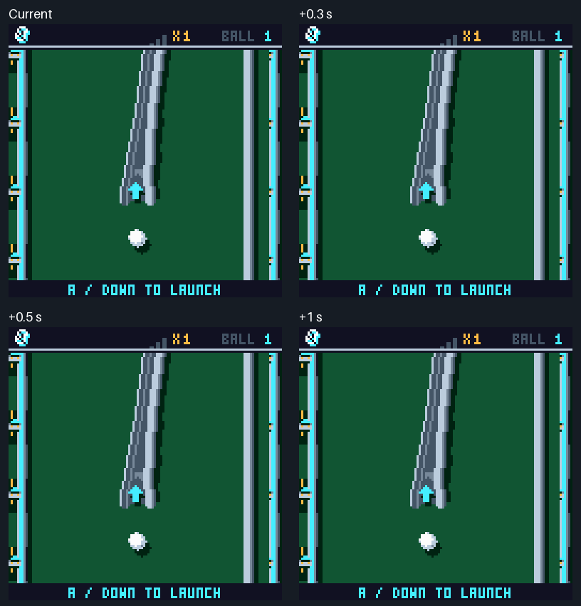
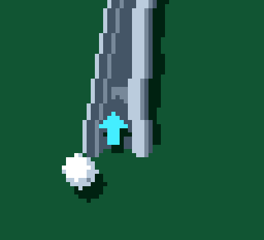
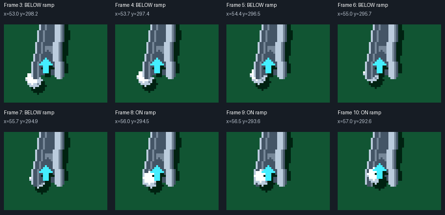

Staged shot rendered by the actual C++ game. Identical ball motion and speed; only zoom onset changes. Each ride continues to the configured exit. No timing variant has been applied to the game.

0.4 s cubic ease in. Normal playback speed; the video contains every simulation frame at 60 fps. Preview only.
Current production capture and drawing rules. Slow motion for inspection.

